Diseño
Aprendé a definir medidas, proporciones y detalles para crear tu propia guitarra.
Construí tu instrumento acompañado por luthiers en un proceso pensado para vos.
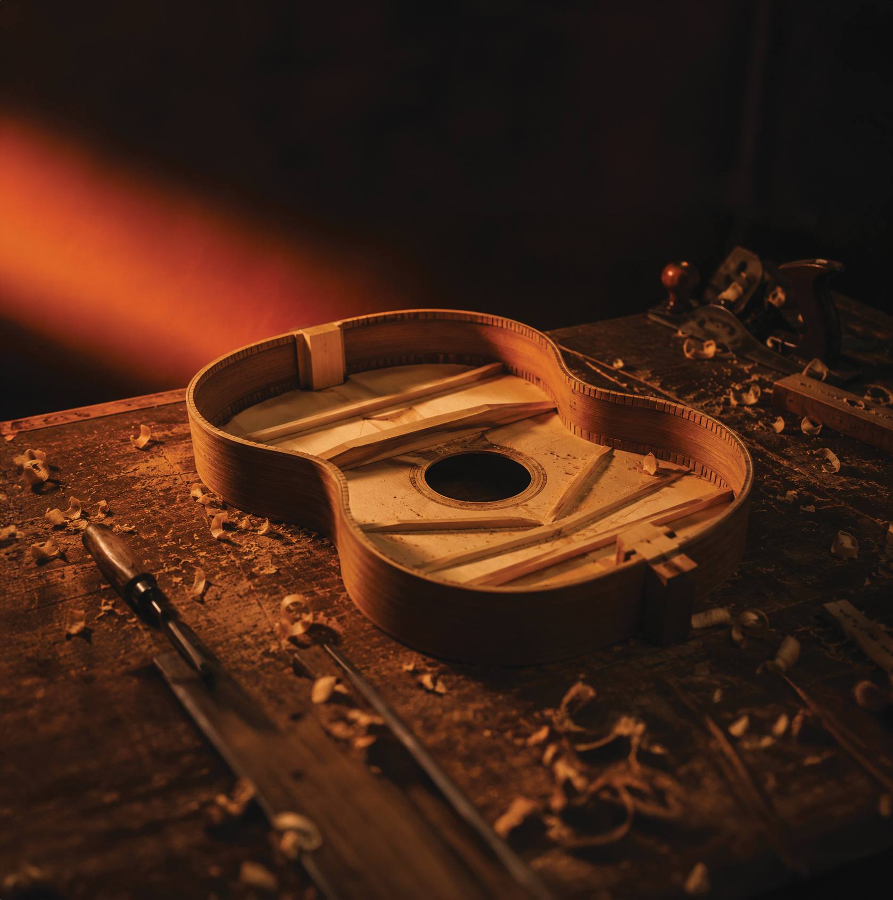
Proceso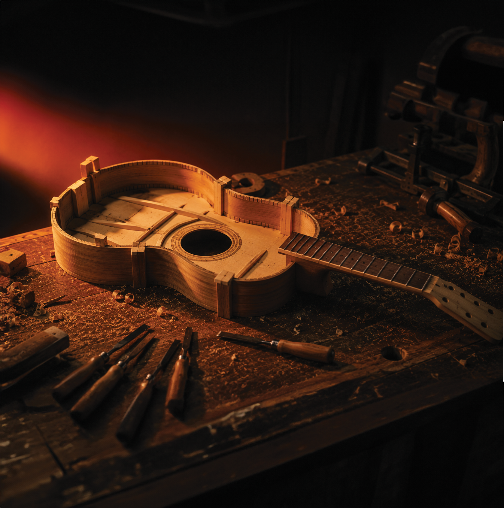
Retoque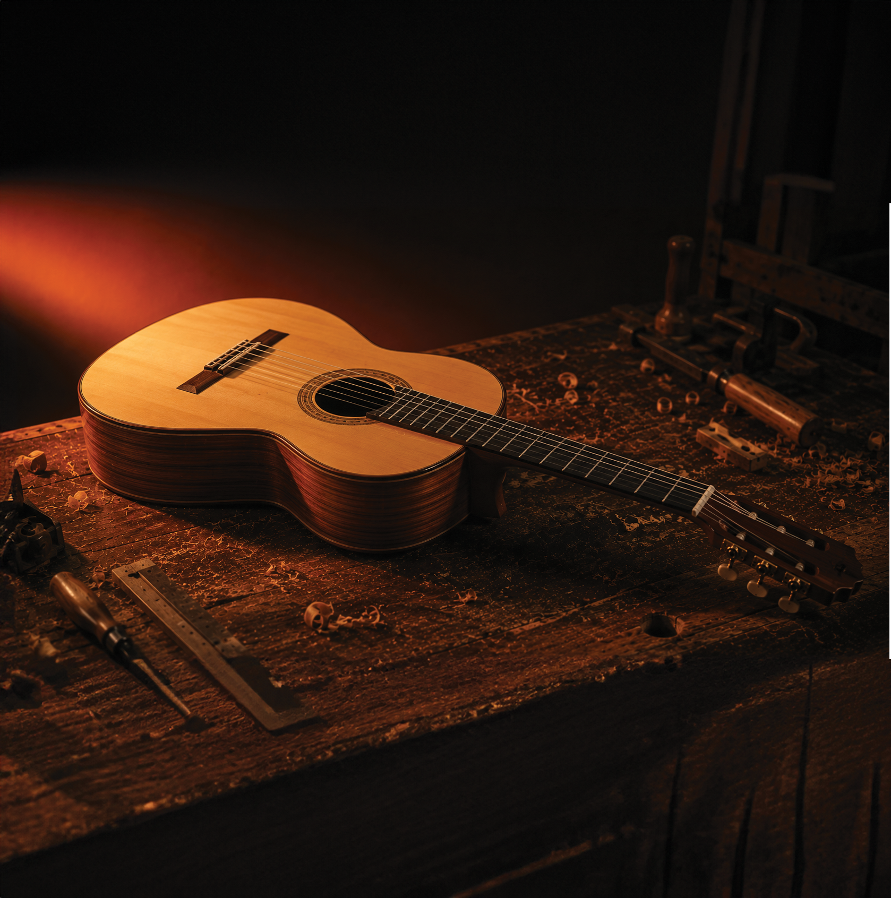
FinalizaciónUn curso de luthería donde diseñás, construís y descubrís cómo nace un instrumento único.
Aprendé a definir medidas, proporciones y detalles para crear tu propia guitarra.
Descubrí técnicas profesionales de corte, ensamblado, calibración y terminación paso a paso.
Viví el proceso completo de transformar madera en un instrumento hecho con tus propias manos.
Desde la elección de los materiales hasta los ajustes finales, el objetivo es que desarrolles la capacidad de construir con autonomía.
Inscribirse al cursoTrabajás sobre procesos completos y materiales del taller.
Acompañamiento en todas las etapas de construcción.
Aprendés construyendo y resolviendo situaciones reales.
El criterio adquirido te acompaña en cada instrumento.
Corte / lectura
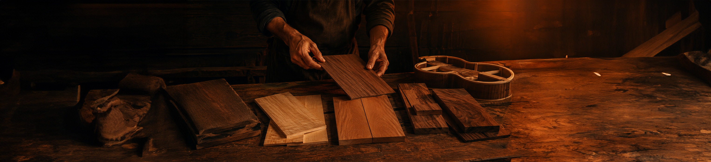
Elegimos cada pieza por su veta, densidad y resonancia, con criterio sonoro antes que estético, garantizando así la excelencia desde el inicio.
Forma / escala
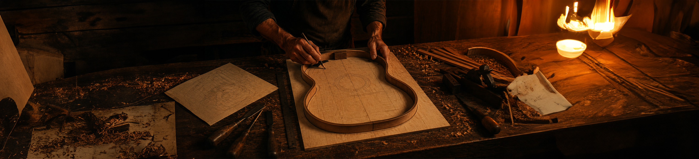
Trazamos la silueta sobre plantilla y definimos la escala: el diseño define ergonomía y carácter sonoro, sentando las bases de la futura obra.
Ensamble / estructura
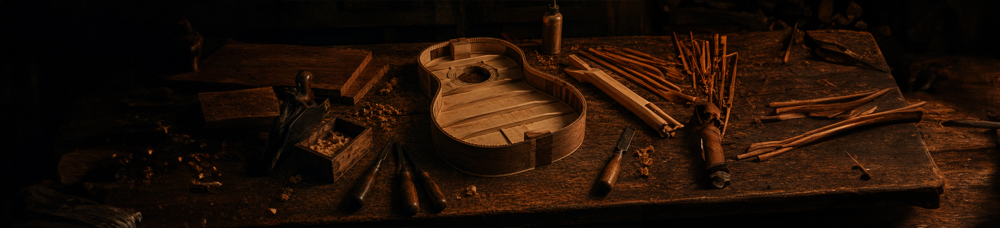
Doblamos los aros, pegamos el fondo y armamos la caja de resonancia: la etapa más estructural, donde la madera cobra su verdadera forma.
Lijado / ajuste
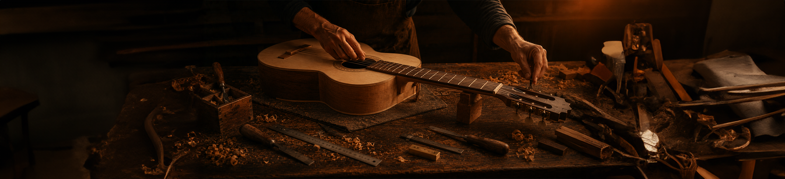
Trabajamos superficies y bordes hasta un acabado sin imperfecciones: el detalle distingue lo artesanal, logrando una suavidad al tacto casi perfecta.
Barniz / calibrado
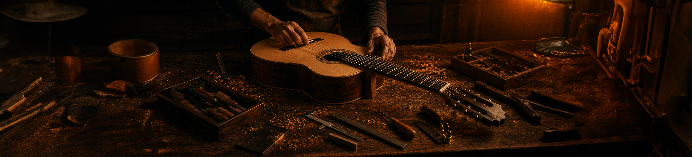
Aplicamos barniz en capas finas y calibramos la acción de las cuerdas: el instrumento toma su voz final, revelando la personalidad única de cada creación.
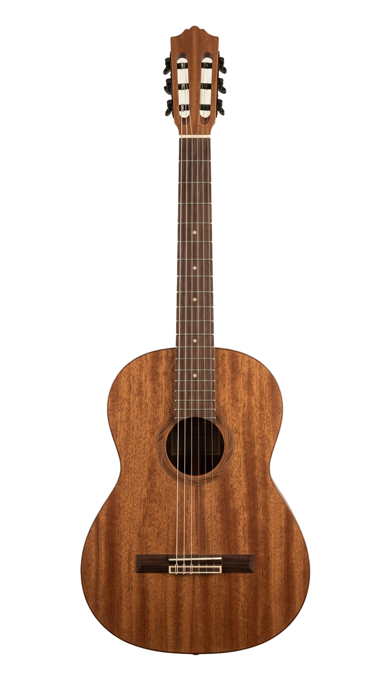
Elegí cada detalle y descubrí una guitarra distinta en cada combinación.
VER PROCESO ENTEROGuitarras clásicas · 12 años de oficio
Acompaña cada proyecto desde el diseño hasta los últimos detalles del instrumento.
"Una guitarra bien construida no se termina: se afina para toda la vida."
Restauración y Acabados Artesanales · 6 años de oficio
Dedicado a la restauración de instrumentos y al desarrollo de acabados tradicionales, transmite el valor del detalle y del trabajo manual en cada etapa..
"Cada instrumento tiene una historia; nuestro trabajo es ayudar a que siga sonando durante muchos años más.""
Construcción Integral y Calibración · 18 años de oficio
Luthier especializado en la construcción de guitarras clásicas desde cero.
"Una buena guitarra comienza mucho antes del primer corte; empieza en cada decisión que tomás sobre la madera."
No. El curso está pensado para personas que nunca construyeron una guitarra. Todo el proceso se realiza acompañado por luthiers.
No. El taller cuenta con todas las herramientas necesarias para cada etapa de la construcción. Solo necesitás ganas de aprender y crear tu propia guitarra.
La duración depende del ritmo de trabajo y del avance de cada alumno. Durante el curso vas a recorrer por todas las etapas.
Todos los materiales necesarios para construir la guitarra están incluidos en el curso todo lo que se utiliza durante el proceso de construcción.
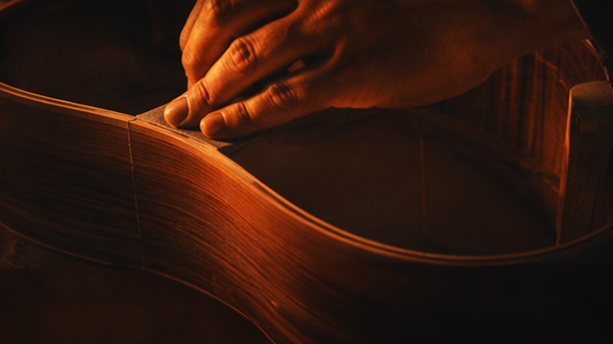
Cada instrumento que construimos nace de una conversación. Contanos qué sonido estás buscando y lo hacemos realidad.
Hablar con un luthierEmpezá a construir un instrumento único junto a luthiers que te acompañarán en cada etapa del proceso.
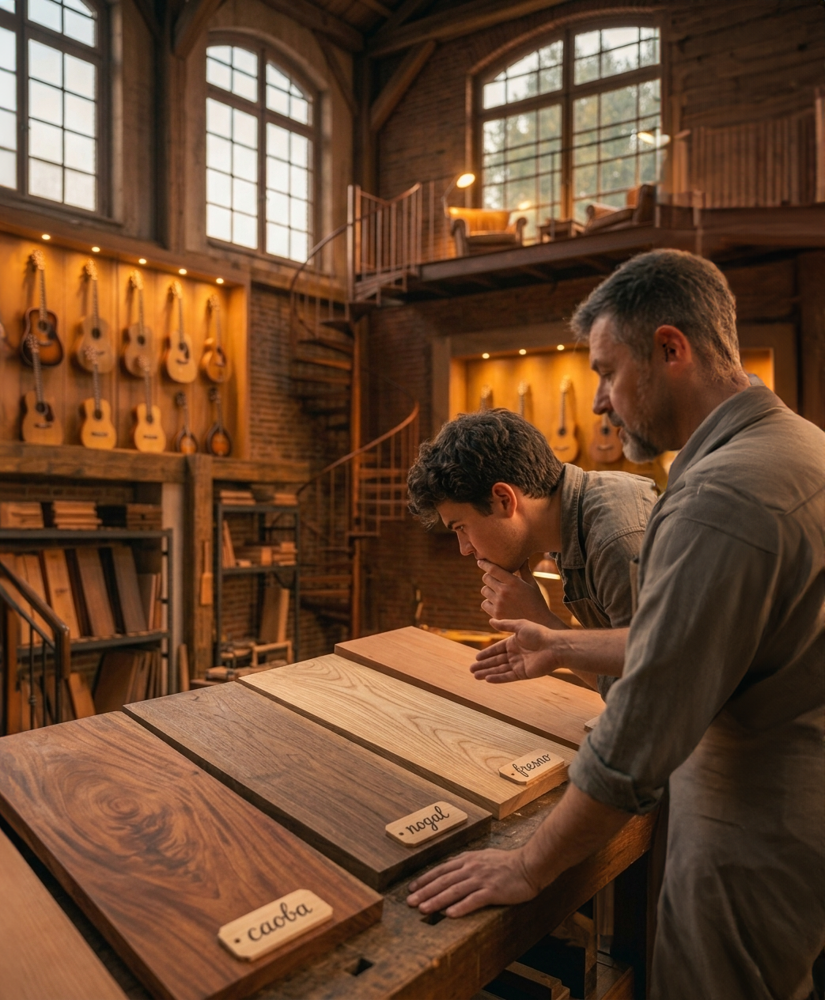

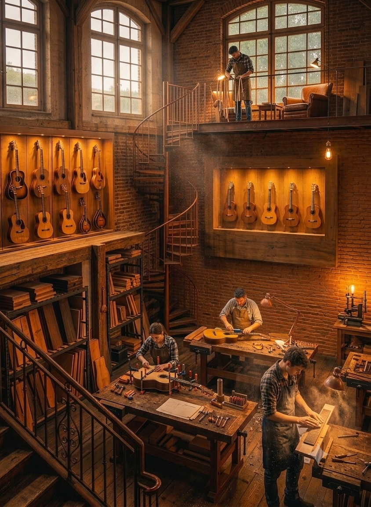

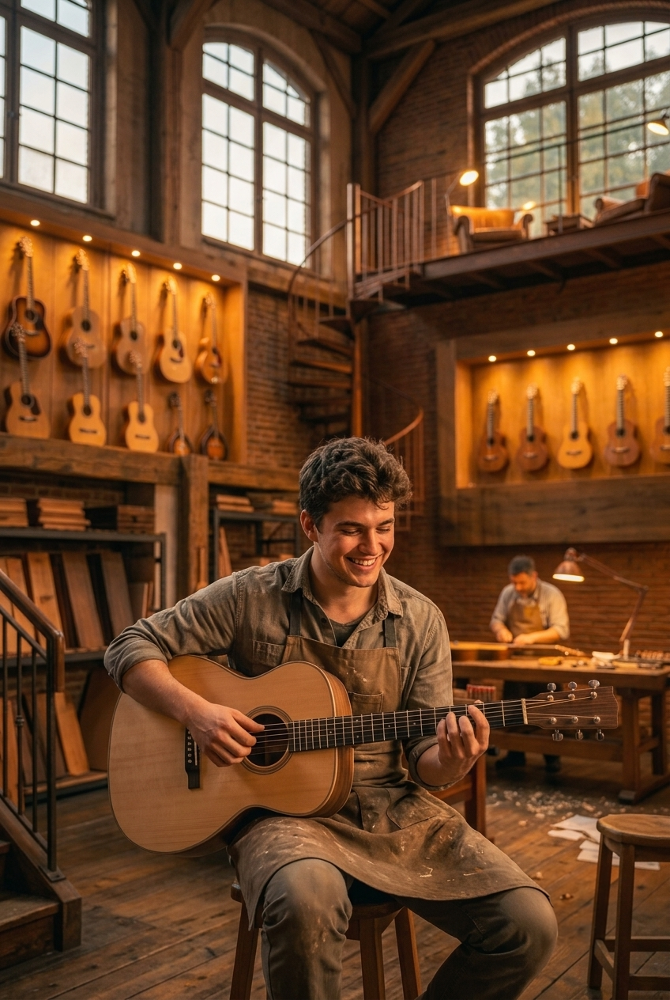